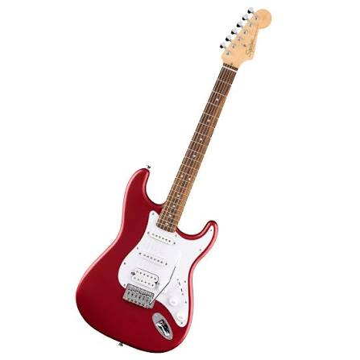
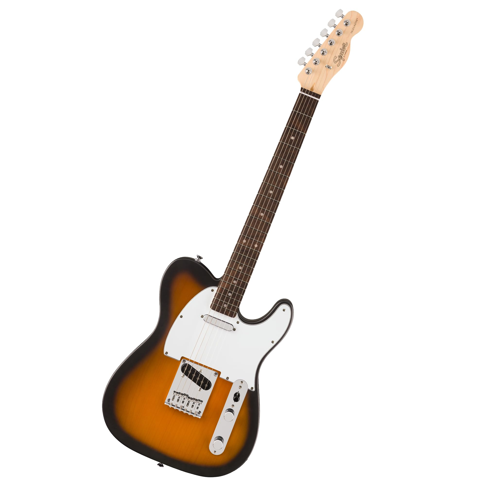
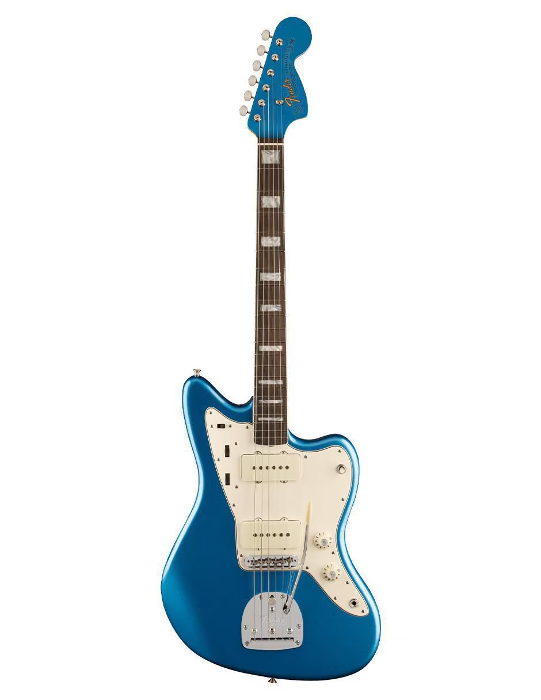
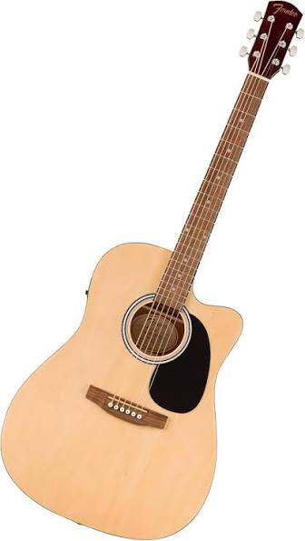
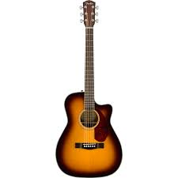
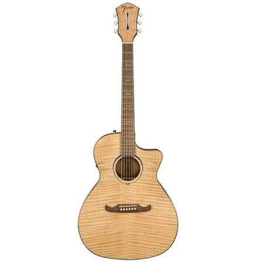

Fender, un ícono estadounidense, fue fundada en el sur de California y ha consolidado una influencia mundial que se extiende desde el estudio hasta el escenario, e incluso más allá. Desde principiantes hasta los artistas más aclamados del mundo, todos han utilizado instrumentos, amplificadores y equipos Fender, lo que convierte a la compañía no solo en un líder respetado de la industria, sino también en un símbolo cultural con resonancia global. Casi siete décadas después de que su fundador, Leo Fender, construyera su primera guitarra eléctrica, el alcance de Fender trasciende los instrumentos y accesorios, abarcando una gama de experiencias digitales innovadoras que impulsan la expresión musical y sirven a los músicos en cada etapa, en cada escenario.
Estas son los tipos de guitarras Fender que deberías conocer, incluyendo los acústicos


La guitarra que lo inició todo. Cuando la primera Telecaster® salió de la línea de producción en 1951, acercó la guitarra eléctrica de cuerpo sólido a las masas: engañosamente simple, totalmente revolucionaria, de vital importancia.
La Telecaster, una guitarra eléctrica de cuerpo sólido, se lanzó en 1951 con una configuración de doble pastilla para un rendimiento amplificado sin precedentes, convirtiéndose rápidamente en un instrumento imprescindible para generaciones de músicos.



